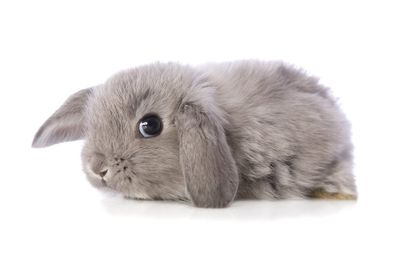
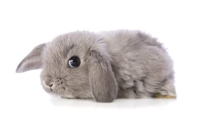
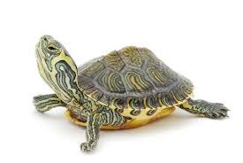

Throughout my lifetime I have owned 30 rabbits.
 

A family member is allergic to cats, so we havent been able to have one.


A family member is allergic to dogs, so we havent been able to have one.


We had a couple of fish when I was much younger.

I took care of a friends turtles for a weekend while he was away, and Ive wanted one ever since.
